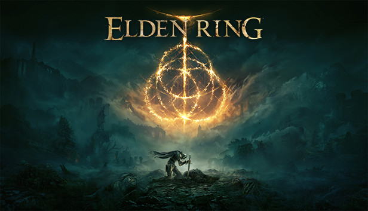
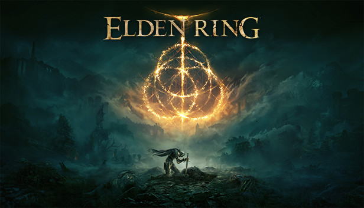
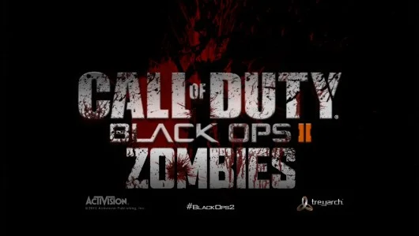
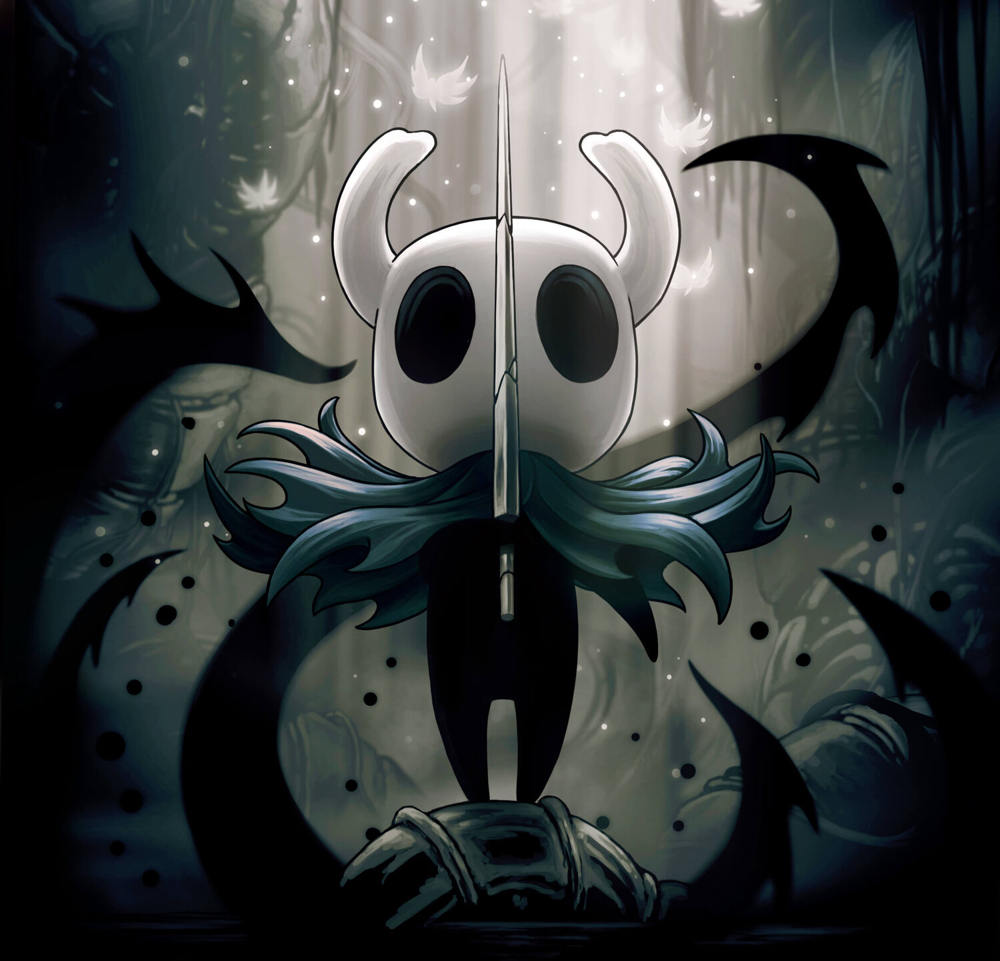
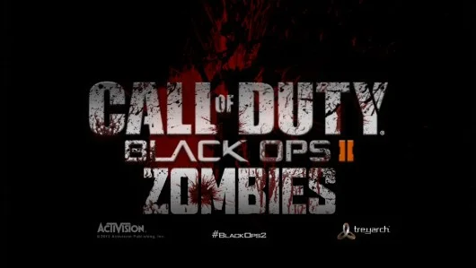
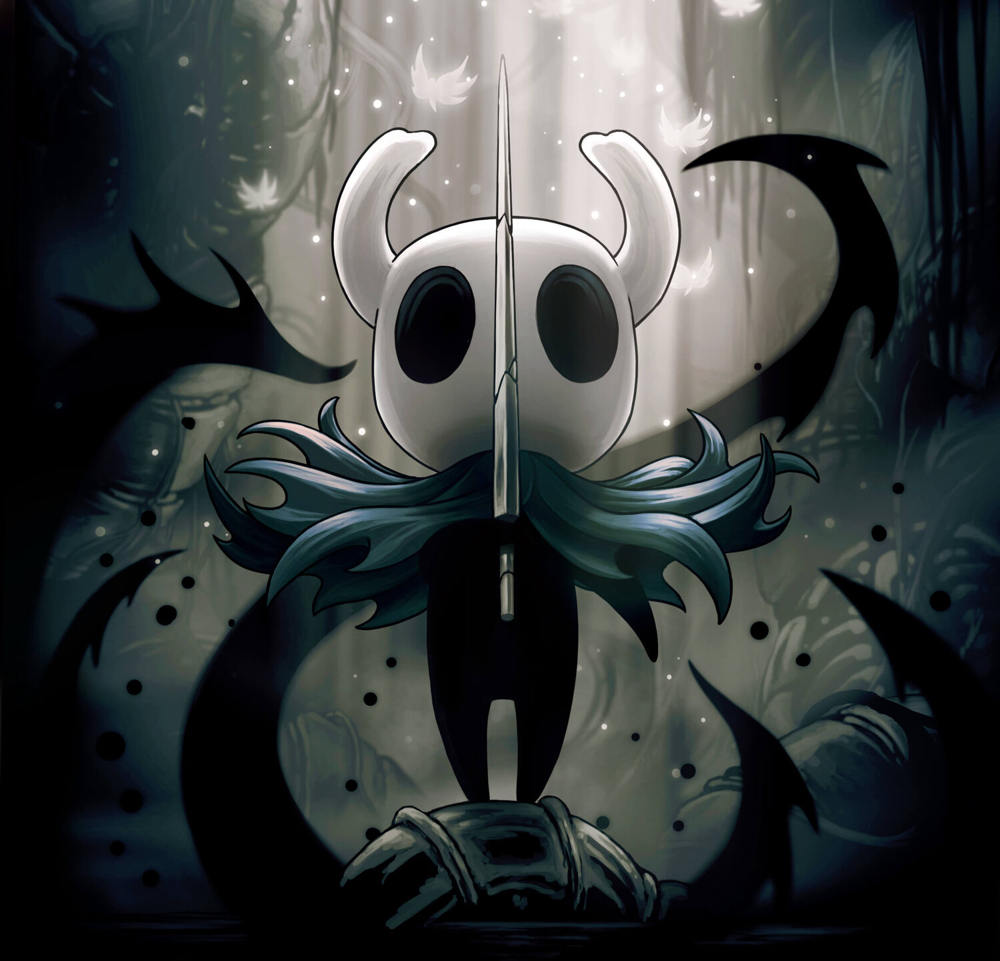
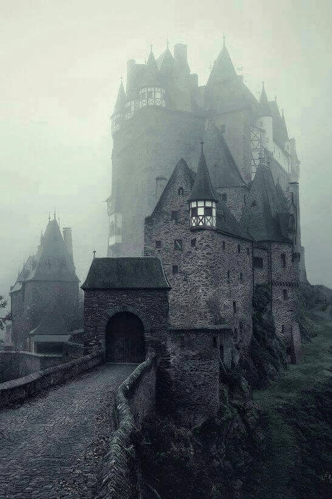
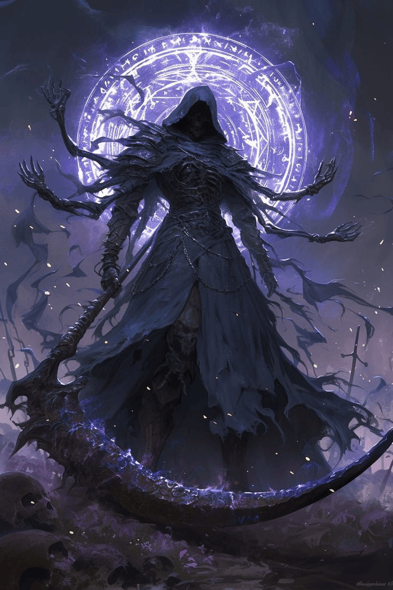
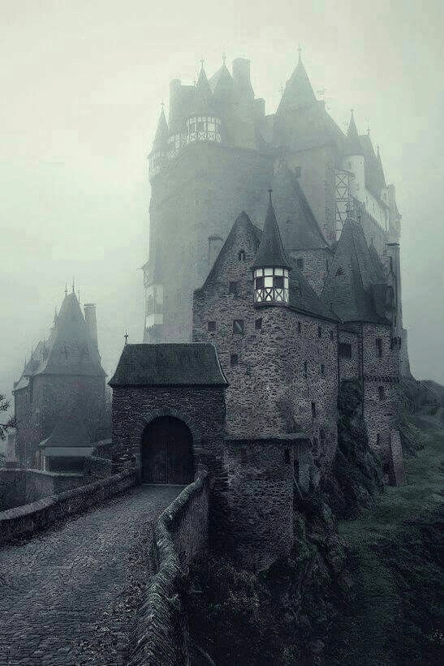
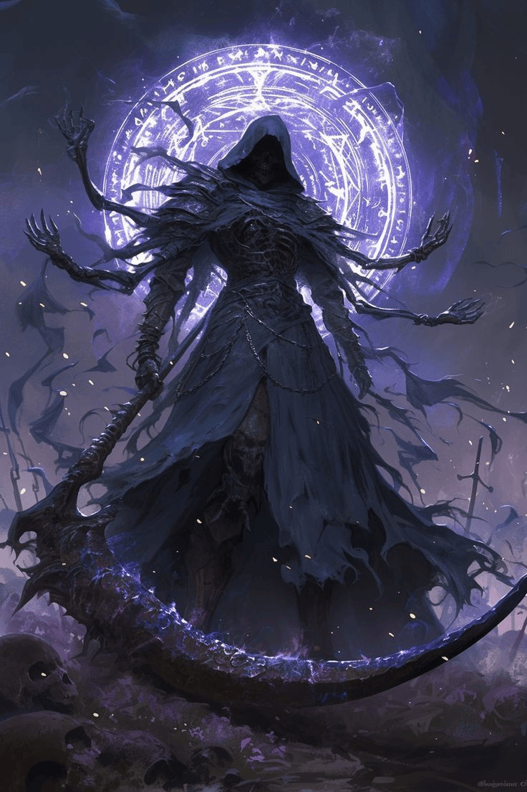

Olá, eu sou o Nicolas Risso
Sou um Programador de Jogos especializado em C++ e Unreal Engine 5, e minha jornada no desenvolvimento começou aos 14 anos. Ao longo dos anos, transformei minha paixão por games em uma carreira dedicada à criação de experiências interativas inovadoras e imersivas. Estou sempre em busca de superar limites e transformar ideias em projetos que unem técnica e criatividade.
Dê uma olhada no meu PortfolioMeus Jogos Favoritos

 

 



Alguns dos jogos que mais me inspiram: The Witcher 3, Dark Souls 3, Baldurs Gate 3, Elden Ring, Forza Horizon 5, Call of Duty Black Ops 2: Zombies e Hollow Knight. Eles mostram como design, narrativa e técnica se unem para criar mundos imersivos e inesquecíveis.
Curiosidades
 



Desenvolvo jogos desde criança, na época como jogos de papél mesmo. Sou mestre de RPG e cantor de Heavy Metal no tempo livre. Curto muito arquitetura Vitoriana e Gótica com pegada para terror. Minha banda favorita é Avenged Sevenfold e minha classe favorita é Necromante.